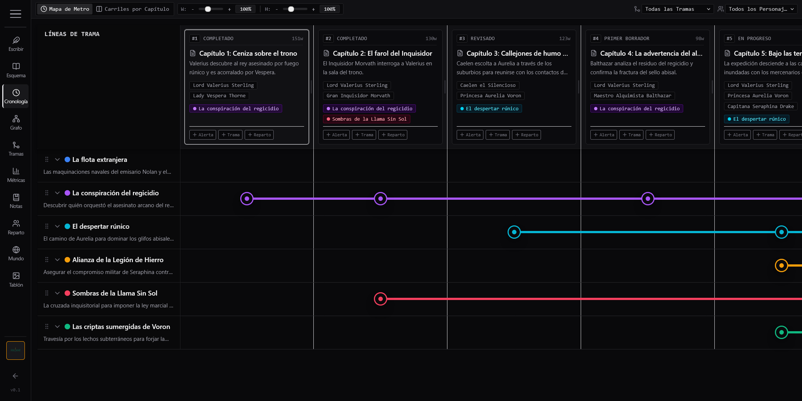
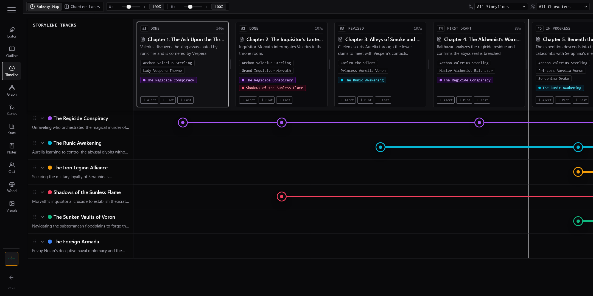
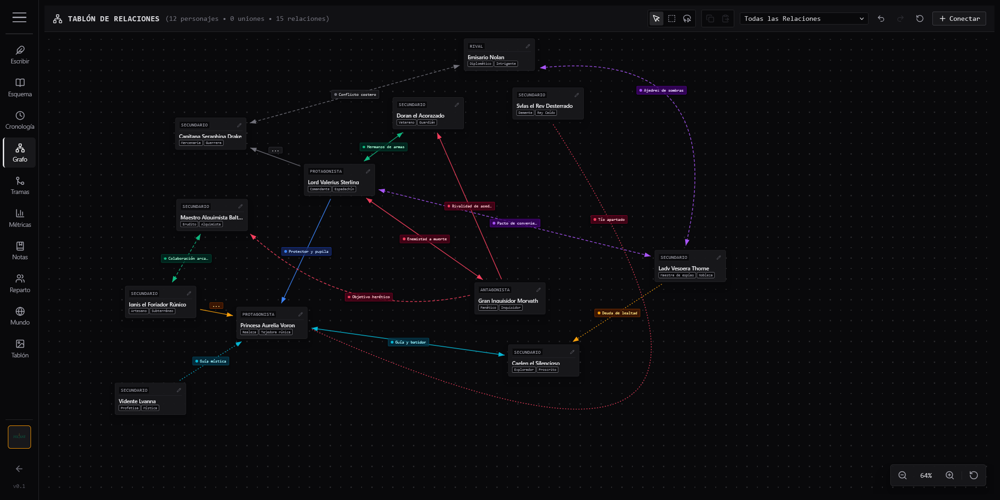
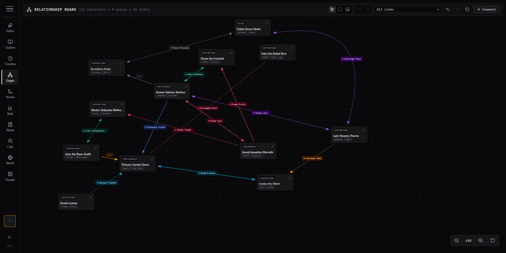

Donde tus historias cobran vida, capítulo a capítulo. Where your stories come to life, chapter by chapter.
Foliant es el entorno de escritura artesanal y construcción de mundos que combina una máquina de escribir digital libre de distracciones con diagramas de relaciones, cronologías multihilo y taxonomía de lore. Creado por y para autores, 100% privado y local-first. Foliant is the artisan writing and worldbuilding environment combining a distraction-free digital manuscript sheet with relationship graphs, multi-thread timelines, and lore taxonomy. Crafted by and for novelists, 100% private and local-first.
Versión Web: los cambios se conservan para la sesión activa del navegador; usa Guardar como (Ctrl+Shift+S) para descargar el archivo en local.
Instalación en Escritorio: Foliant es 100% de código abierto y auditable en GitHub. Al ser un proyecto independiente sin certificados comerciales corporativos, Defender (SmartScreen) o Gatekeeper pueden mostrar un aviso preventivo de editor desconocido al instalar.
Web Version: changes are retained for the active browser session; use Save As (Ctrl+Shift+S) to download a local copy.
Desktop Installation: Foliant is 100% open source and auditable on GitHub. As an independent project without commercial enterprise certificates, Defender (SmartScreen) or Gatekeeper may display a preventive unknown publisher note during installation.
Pensado para autores de historias complejas Engineered for authors crafting deep stories
Las novelas no son sólo texto lineal: son tramas interconectadas, cronologías densas y universos vivos. Foliant te da el control de cada dimensión mediante cronología multilínea y grafo de relaciones en un entorno local y modular. Novels are more than linear text: they are interwoven subplots, intricate timelines, and living worlds. Foliant provides complete control with multi-thread timelines and relationship graphs in a private, local-first studio.


Visualiza arcos argumentales en carriles paralelos o en formato 'Subway Map', sincronizados bidireccionalmente con cada capítulo. Track plot arcs across parallel tracks or 'Subway Map' format, bidirectionally synchronized with manuscript scenes.


Inspecciona afinidades, rivalidades, linajes y pactos secretos entre tu elenco con enlaces dinámicos en un lienzo interactivo. Inspect affinities, rivalries, bloodlines, and secret alliances with dynamic links in an interactive canvas.
Crear o Importar Manuskript Create or Import from Manuskript
Comienza una novela desde cero con estructura jerárquica de carpetas y escenas, o importa al instante proyectos completos de Manuskript (.msk). Begin a novel from scratch with modular chapter hierarchies, or instantly import full projects from Manuskript (.msk).
Editor Literario Inmersivo Immersive Writing Sheet
Tipografía cuidada, hoja de papel con tono personalizable, notas al margen y métricas de palabras en tiempo real. Refined typography, customizable paper tones, margin notes, and instant real-time word metrics.
Exportar a EPUB 3 Export to EPUB 3
Genera libros electrónicos estándar EPUB 3 listos para publicación o lectura en dispositivos digitales, preservando tu estructura capitular. Generate standard EPUB 3 eBooks ready for publishing or e-readers, preserving your entire chapter structure.
Escritorio Nativo o Navegador Web Native Desktop or Web Browser
Elige cómo prefieres disfrutar de Foliant según tu flujo de trabajo. Choose how you prefer to run Foliant according to your creative workflow.
Probar al Instante Instant Web Studio
Accede inmediatamente desde cualquier navegador sin descargar ejecutables. Incluye precargado el proyecto de fantasía "The Sunken Crown" para que explores todas las vistas desde el primer segundo. Access immediately from any modern browser without installing software. Includes the preloaded fantasy epic "The Sunken Crown" so you can explore all features right away.
- — Cero instalación y cero registro previo Zero install, no account required
- — Proyecto de ejemplo precargado Preloaded sample novel project
- — Exportación y prueba de todas las herramientas Full export and workspace feature set
Instalación en Escritorio Desktop Installation
El entorno nativo para tu ordenador personal. Ofrece sincronización directa con carpetas del sistema de archivos, menor uso de memoria y modo 100% offline. The native environment for your personal computer. Offers direct folder filesystem sync, ultra-low memory usage, and 100% offline capability.
- — Guardado modular en carpetas del disco Modular disk persistence in clean folders
- — Importación directa de archivos locales (.foliant / Manuskript) Direct local file import (.foliant / Manuskript)
- — Binario ligero, rápido y sin rastreo Fast, lightweight, telemetry-free binary
Propón una funcionalidad Suggest a Feature
¿Echas en falta alguna herramienta para tu flujo de escritura? Envíanos tus sugerencias y ayúdanos a construir el mejor entorno para autores. Missing a tool for your writing workflow? Send us your suggestions and help shape the ultimate studio for authors.